基本的な考え方と階層的方法
(Press ? for help, n and p for next and previous slide)
村田 昇
クラスタ分析 (cluster analysis) の目的
個体の間に隠れている 集まり=クラスタ を個体間の“距離”にもとづいて発見する方法
総務省 https://www.e-stat.go.jp/SG1/estat/List.do?bid=000001083999&cycode=0
都道府県名 : 地方区分 : 森林面積割合: 森林面積割合 (%) 2014年 農業産出額 : 就業者１人当たり農業産出額(販売農家）(万円) 2014年 人口割合 : 全国総人口に占める人口割合 (%) 2015年 土地生産性 : 土地生産性（耕地面積１ヘクタール当たり）(万円) 2014年 商品販売額 : 商業年間商品販売額［卸売業＋小売業］（事業所当たり）(百万円) 2013年
| 都道府県名 | 地方区分 | 森林面積割合 | 農業算出額 | 人口割合 | 土地生産性 | 商品販売額 |
|---|---|---|---|---|---|---|
| 北海道 | 北海道 | 67.9 | 1150.6 | 4.23 | 96.8 | 283.3 |
| 青森県 | 東北 | 63.8 | 444.7 | 1.03 | 186.0 | 183.0 |
| 岩手県 | 東北 | 74.9 | 334.3 | 1.01 | 155.2 | 179.4 |
| 宮城県 | 東北 | 55.9 | 299.9 | 1.84 | 125.3 | 365.9 |
| 秋田県 | 東北 | 70.5 | 268.7 | 0.81 | 98.5 | 153.3 |
| 山形県 | 東北 | 68.7 | 396.3 | 0.88 | 174.1 | 157.5 |
| 福島県 | 東北 | 67.9 | 236.4 | 1.51 | 127.1 | 184.5 |
| 茨城県 | 関東 | 31.0 | 479.0 | 2.30 | 249.1 | 204.9 |
| 栃木県 | 関東 | 53.2 | 402.6 | 1.55 | 199.6 | 204.3 |
| 群馬県 | 関東 | 63.8 | 530.6 | 1.55 | 321.6 | 270.0 |
| 埼玉県 | 関東 | 31.9 | 324.7 | 5.72 | 247.0 | 244.7 |
| 千葉県 | 関東 | 30.4 | 565.5 | 4.90 | 326.1 | 219.7 |
| 東京都 | 関東 | 34.8 | 268.5 | 10.63 | 404.7 | 1062.6 |
| 神奈川県 | 関東 | 38.8 | 322.8 | 7.18 | 396.4 | 246.1 |
| 新潟県 | 中部 | 63.5 | 308.6 | 1.81 | 141.9 | 205.5 |
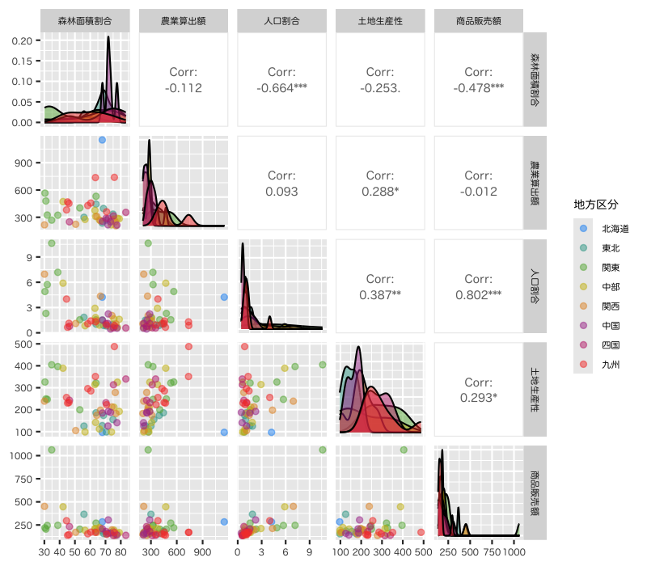
Figure 1: 散布図
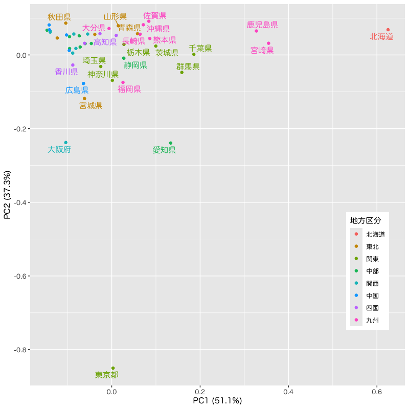
Figure 2: 主成分得点による散布図
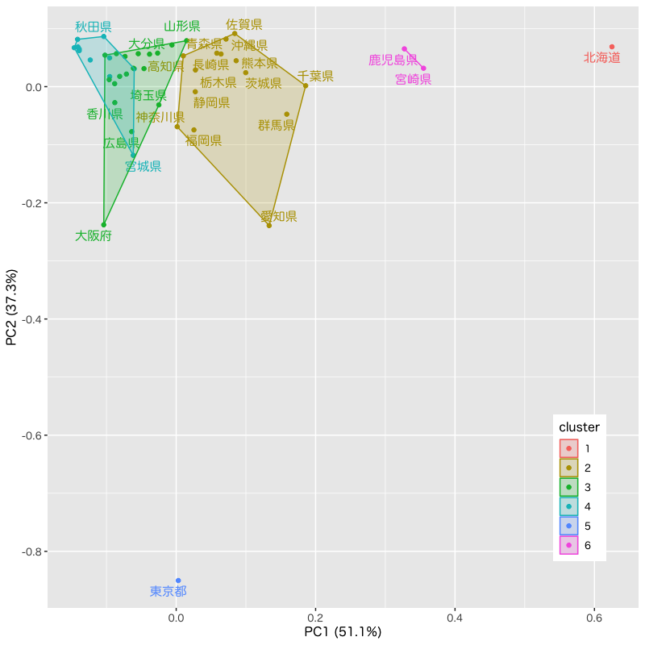
Figure 3: 散布図上のクラスタ構造 (クラスタ分析の概念図)
社会生活統計指標の一部(関東地方)
| 都道府県名 | 森林面積割合 | 農業産出額 | 人口割合 | 土地生産性 | 商品販売額 |
|---|---|---|---|---|---|
| 茨城県 | 31.0 | 479.0 | 2.30 | 249.1 | 204.9 |
| 栃木県 | 53.2 | 402.6 | 1.55 | 199.6 | 204.3 |
| 群馬県 | 63.8 | 530.6 | 1.55 | 321.6 | 270.0 |
| 埼玉県 | 31.9 | 324.7 | 5.72 | 247.0 | 244.7 |
| 千葉県 | 30.4 | 565.5 | 4.90 | 326.1 | 219.7 |
| 東京都 | 34.8 | 268.5 | 10.63 | 404.7 | 1062.6 |
| 神奈川県 | 38.8 | 322.8 | 7.18 | 396.4 | 246.1 |
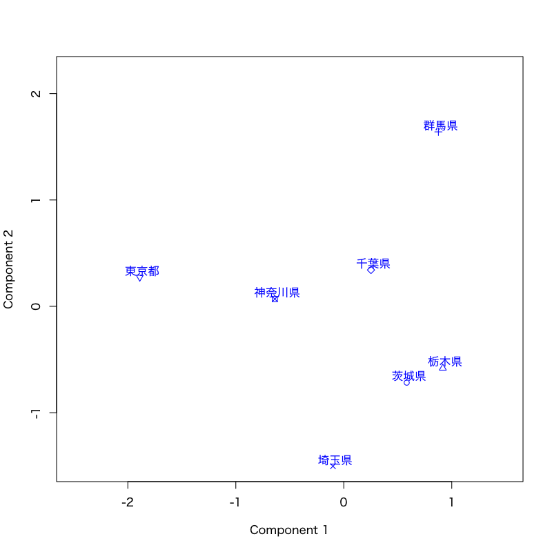
Figure 4: 凝集的クラスタリング
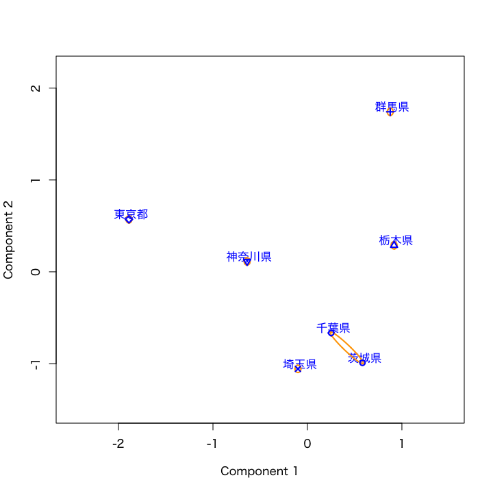
Figure 5: クラスタリングの手続き (その1)
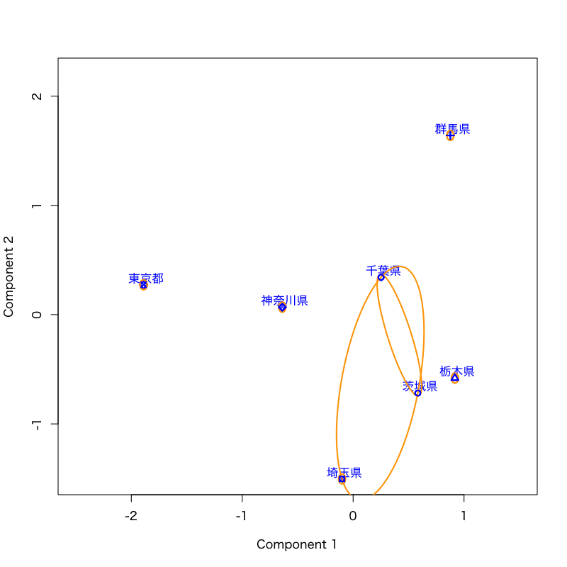
Figure 6: クラスタリングの手続き (その2)
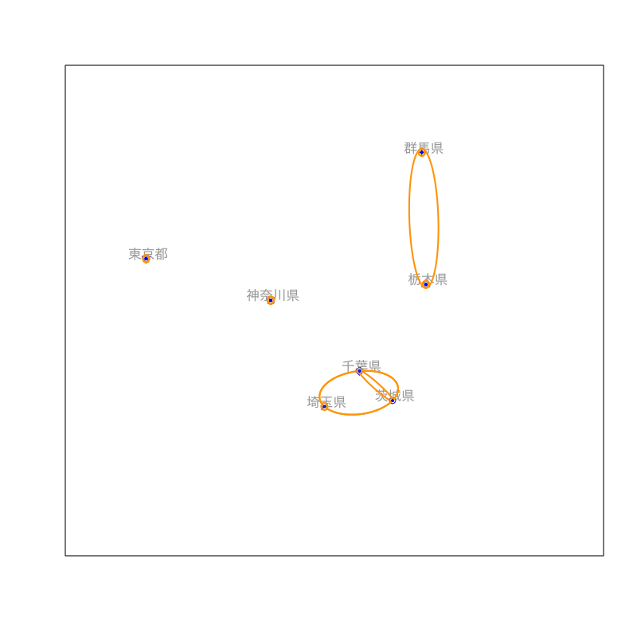
Figure 7: クラスタリングの手続き (その3)
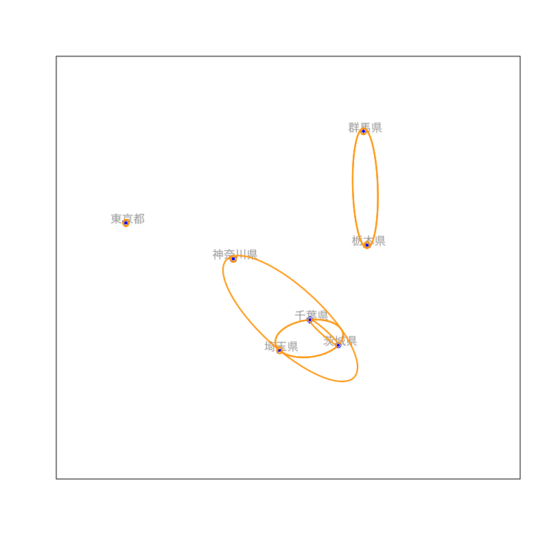
Figure 8: クラスタリングの手続き (その4)
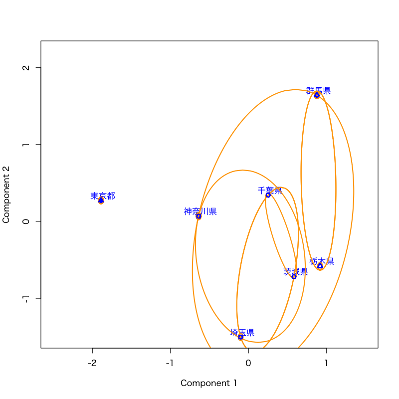
Figure 9: クラスタリングの手続き (その5)
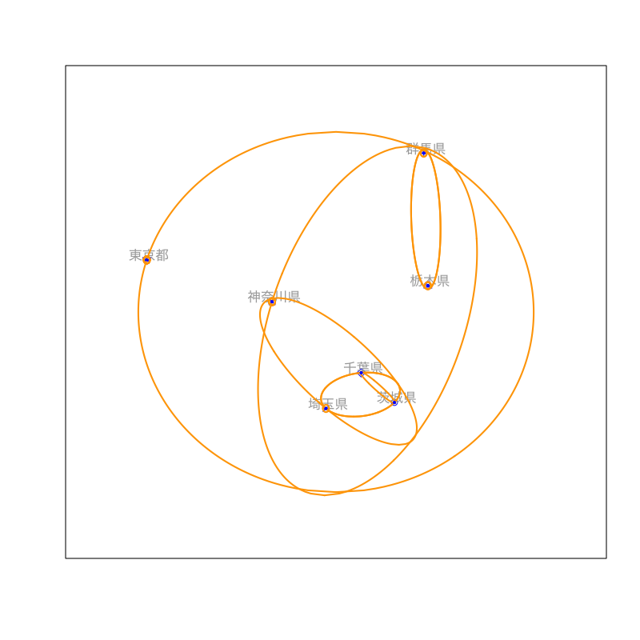
Figure 10: クラスタリングの手続き (その6)
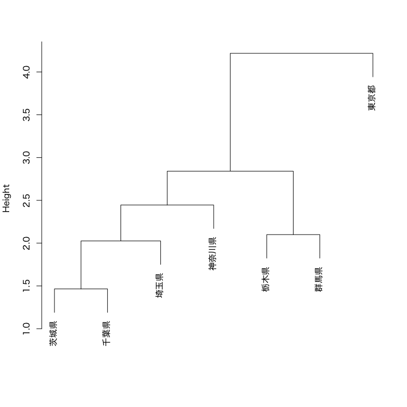
Figure 11: デンドログラムによるクラスタ構造の表示
データ : 変数の値を成分としてもつベクトル
\begin{equation} \boldsymbol{x}=(x_{1},\dotsc,x_{d})^{\mathsf{T}}, \boldsymbol{y}=(y_{1},\dotsc,y_{d})^{\mathsf{T}}\in\mathbb{R}^{d} \end{equation}
各成分の差の2乗和の平方根 (2ノルム)
\begin{equation} d(\boldsymbol{x},\boldsymbol{y}) =\sqrt{(x_{1}-y_{1})^{2}+\dotsb+(x_{d}-y_{d})^{2}} \end{equation}
格子状に引かれた路に沿って移動するときの距離
\begin{equation} d(\boldsymbol{x},\boldsymbol{y}) =|x_{1}-y_{1}|+\dotsb+|x_{d}-y_{d}| \end{equation}
各成分の差の \(p\) 乗和の \(p\) 乗根(\(p\)-ノルム)
\begin{equation} d(\boldsymbol{x},\boldsymbol{y}) =\bigl\{|x_{1}-y_{1}|^{p}+\dotsb+|x_{d}-y_{d}|^{p}\bigr\}^{1/p} \end{equation}
クラスタ : いくつかのデータ点からなる集合
\begin{equation} C_{a}=\left\{\boldsymbol{x}_{i}|i\in\Lambda_{a}\right\},\; C_{b}=\left\{\boldsymbol{x}_{j}|j\in\Lambda_{b}\right\},\quad C_{a}\cap C_{b}=\emptyset \end{equation}
最も近い対象間の距離を用いる方法
\begin{equation} D(C_{a},C_{b}) =\min_{\boldsymbol{x}\in C_{a},\;\boldsymbol{y}\in C_{b}} d(\boldsymbol{x},\boldsymbol{y}) \end{equation}
統合前後のクラスタ間の関係
\begin{equation} D(C_{a}+ C_{b}, C_{c}) =\min\bigl\{D(C_{a},C_{c}), D(C_{b},C_{c})\bigr\} % =\min\left\{D(C_{a},C_{c}), D(C_{b},C_{c})\right\} \end{equation}
最も遠い対象間の距離を用いる方法
\begin{equation} D(C_{a},C_{b}) =\max_{\boldsymbol{x}\in C_{a},\;\boldsymbol{y}\in C_{b}} d(\boldsymbol{x},\boldsymbol{y}) \end{equation}
統合前後のクラスタ間の関係
\begin{equation} D(C_{a}+ C_{b}, C_{c}) =\max\bigl\{D(C_{a},C_{c}), D(C_{b},C_{c})\bigr\} % =\max\left\{D(C_{a},C_{c}), D(C_{b},C_{c})\right\} \end{equation}
全ての対象間の平均距離を用いる方法
\begin{equation} D(C_{a},C_{b}) =\frac{1}{|C_{a}||C_{b}|} \sum_{\boldsymbol{x}\in C_{a},\;\boldsymbol{y}\in C_{b}} d(\boldsymbol{x},\boldsymbol{y}) \end{equation}
統合前後のクラスタ間の関係
\begin{equation} D(C_{a}+ C_{b}, C_{c}) =\frac{|C_{a}|D(C_{a},C_{c})+|C_{b}|D(C_{b},C_{c})}{|C_{a}|+|C_{b}|} \end{equation}